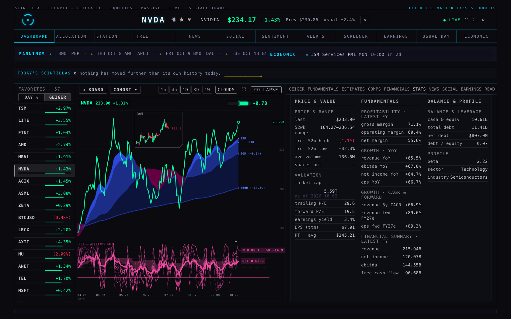
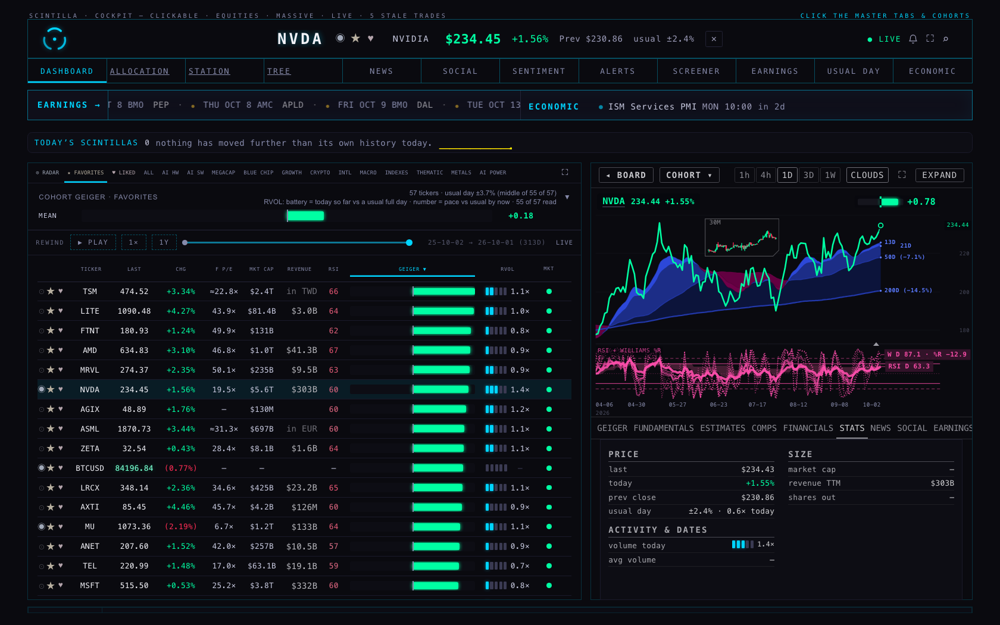
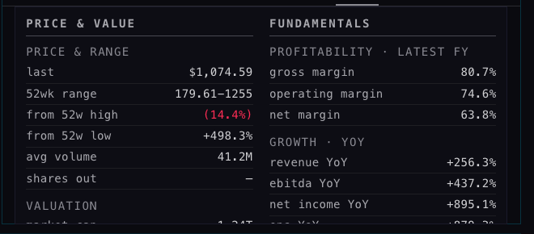
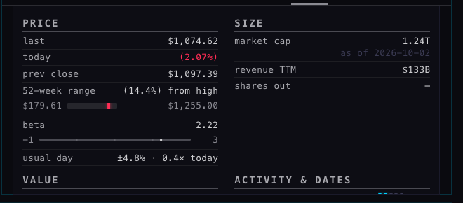
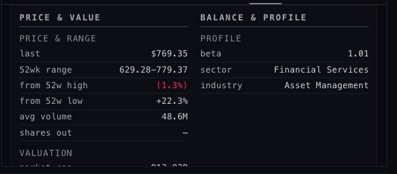
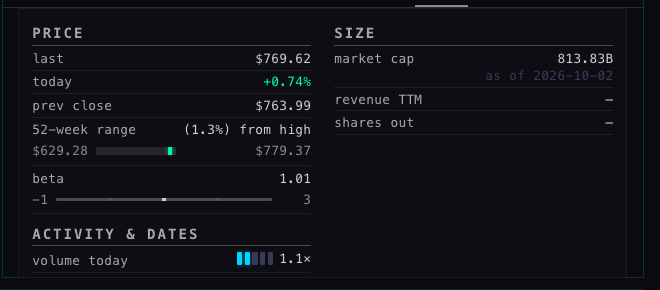
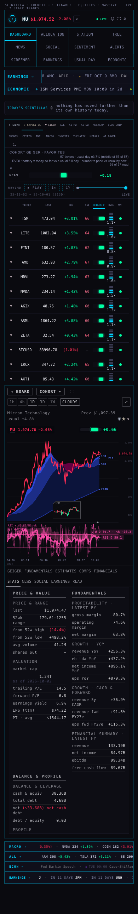
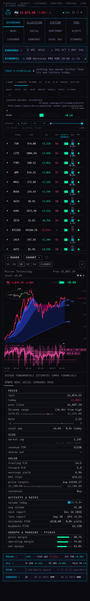
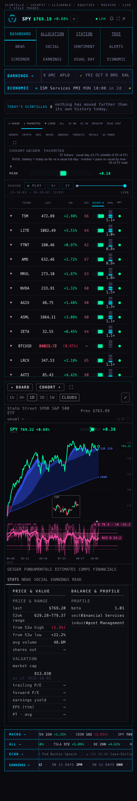
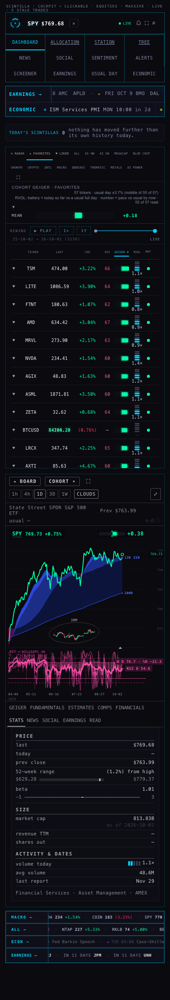

THE CLICK AND THE STATS TAB · HUB · 2 OCT
branch hub/h7-click-stats-20261002 · from live f86e01e · built and checked headless, nothing deployed · pictures are real browser shots at 1680 and 390 wide
Two of your 2 Oct notes, done on one branch of the Hub. Every picture below was taken by a headless browser from this branch (the live Hub is untouched); the "before" pictures are the live page as it is today.
1 · THE CLICK — a ticker now always opens the right-side view, collapsed


What had happened
The EXPAND button wrote a note into the browser ("expanded = yes") and every later open read that note first. So one press of EXPAND, days ago, turned every ticker click since into a full-width open. Measured on the live page, headless: with that note present, a click on NVDA opened with the page in its expanded state and the button reading COLLAPSE. The 2 Oct "remembered lists" work (S7) did not touch this; it was the original design of the button (27 Sep), which said "remembered per browser".
What it does now
- A fresh open — a board row, the search box, the map, a tape, any ticker link — always opens the right-side view collapsed. EXPAND is a choice you make on each visit; the page no longer reads or writes that browser note, and a browser that still holds the old note has it cleared once.
- Inside the expanded view, walking the names with its own list (the rail on the left) or with ↑ / ↓ keeps the view expanded, because you have not left it.
- Headless proof on this branch, with the old note deliberately set to "yes" first: NVDA opens collapsed (EXPAND, 640 px) → press EXPAND → expanded (COLLAPSE, 693 px) → open MU from the board → collapsed again (EXPAND, 640 px). Pictures:
screens/after-click-1-open-NVDA.png,after-click-2-after-EXPAND.png,after-click-3-open-MU.png.
2 · THE STATS TAB — six small blocks, smaller type, and pictures where they read faster








The six blocks, and where every number comes from
Nothing from the old tab was dropped; it was regrouped. No new read: every number was already in the company's data or on the board row. Hover any row on the Hub and it tells you the table it comes from and the date where the store records one.
| Block | Rows | Source (what you see on hover) |
|---|---|---|
| PRICE | last · today · prev close · 52-week range as a bar (low … high, today's price marked in the day's colour, "from high · from low" in words) · beta on a −1 … 3 rule · usual day (and today as a multiple of it) | the live quote (Massive) · company_profile.range_52wk and .beta (FMP, with the profile's stored date) · the heartbeat's usual day |
| SIZE | market cap with its "as of" date · revenue TTM (the board's figure, in the right currency) · shares out · for a fund: assets (AUM), NAV, holdings, expense ratio, inception | company_profile (FMP) · fundamentals.revenue_ttm · etf_info (FMP) |
| VALUE | trailing P/E · forward P/E · earnings yield · EPS (ttm) · the analysts' target range as a bar (lowest … highest target, the average as a thin tick, today's price marked) · consensus (the vote counts on hover) | fundamentals.eps_ttm and analyst_estimates (the same maths as before: no multiple across currencies, said in words) · price_target_consensus · analyst_ratings (FMP) |
| ACTIVITY & DATES | volume today as the board's battery and number · avg volume · next report (confirmed or estimated on hover) · last report with the EPS surprise · the year's dividends with the yield against the cap · the year's buybacks | board_volume (Massive minute bars) · company_profile.avg_volume · earnings_events · cashflow_history (FMP) |
| GROWTH & MARGINS · FY | gross, operating and net margin as filled bars (green at or above zero, red below) · revenue, ebitda, net income, EPS year on year · 5-year revenue CAGR · next-year revenue and EPS against the last reported year | fundamentals_history (FMP, the fiscal years named on hover) · analyst_estimates |
| BALANCE · FY | cash · total debt · net debt (a net-cash position in red brackets, as before) · debt / equity · the year's revenue, net income, ebitda, free cash flow | balance_history · fundamentals_history · cashflow_history (FMP) |
| (foot line) | sector · industry · exchange | company_profile (FMP) |
Order: PRICE, SIZE, VALUE, ACTIVITY & DATES, then the two fiscal-year blocks — so today's volume and the next report sit in the first screen of the collapsed tab (which is about 210 px tall; it scrolls, as before). Two blocks across in the tab column, three when EXPANDED, one on a phone.
How to read the pictures
- A range bar (52-week, price targets): the grey track runs from the low on the left to the high on the right; the bright mark is today's price — green on an up day, red on a down day; a price outside the range sits on the end. On the targets bar the thin grey tick is the analysts' average target.
- The beta rule: −1 on the left, 3 on the right, faint ticks at 0, 1 and 2; the mark is the name's beta (1 = moves like the market).
- A margin bar fills from zero to the margin (100% is the full track); red when the margin is negative.
- The battery is the board's: today's volume so far against a usual whole session (the dots), and the number is the pace against usual by this time of day.
WHAT COULD BE WRONG, OR LOOKS ODD
- SPY "last report Nov 29 2017". The earnings_events table holds an old FMP row for SPY (a fund), so the tab shows it. It is what the store says; a rule to hide fund "reports" would be a separate decision.
- SPY has no fund facts (AUM, holdings, expense ratio). etf_info holds no row for SPY on the live store today, so the SIZE block shows the market cap only. The FINANCIALS tab has the same gap; nothing on this branch can fill it.
- MU "shares out —". company_profile has no shares_out value for MU today; the dash is honest.
- The dividend yield is approximate: the fiscal year's dividends paid divided by today's market cap, said so on hover.
- On a phone the tab scrolls inside the page (the slot is capped at about 675 px, as it was before this change; the live phone page cut the old PROFILE rows the same way). The blocks are all there; the lower ones need a scroll inside the panel.
NOT DRAWN — the store has no such field
Your note also asked for visuals of the day's range, short interest and the float. None of those is in our tables or in the live quote (which carries the price and the previous close only); neither is a dividend per share or an ex-dividend date. They are not invented here. Adding them means a new FMP read into company_profile (float, short interest, dividend) and a day-high/low on the quote — a decision for you, below.
WHAT I DID NOT DO
- Nothing deployed; no other tab, the board or any table touched. The trial copy at /preview/company-view/ was rebuilt from this page, as the rules require.
- The R3 screenshot tool's "expanded" mode (deliverables/20260927/company-view-r3/tools/shots.mjs) worked by setting the old browser note; with the note gone it now shoots collapsed only. Not changed here.
- Not verified by hand on your screen — all proof is headless, from this branch served locally against the live data.
TESTS
Before: 1690 tests, 1682 pass, 6 fail — the 5 known on live (Indicator Lab checkpoint, the age function, readiness, saved review charts, xfeed-publish) plus "the Clock: … 45-second return to live", a timing test that passes when run alone. After, from the final files: 1698 tests, 1691 pass, 5 fail — exactly the 5 known on live, nothing new broken (8 new tests: the click's three rules, the bar maths, the three pictures, the six blocks from a fixture, a fund, the look). Three older tests that pinned the retired behaviour were updated to the new rule: "remembered per browser" → "a choice per visit", and the R3 three-column pin → the six-block grid.